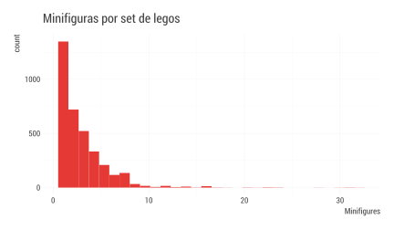

t|1i|2d|3y|1
d|1a|2t|1a|1
Joshua Kunst + Pachá, Mayo 2018
¿Qué haremos?
- Explorar, ordenar, unir, graficar y agregar distintos conjuntos de datos
- Desde un ejemplo sentar las bases para trabajar mejor
- Perder el miedo a R
Introducción
Introducción
Seguimos con el mismo flujo de datos:

Repaso clase anterior
No puedo explicar sin entender
El Análisis Exploratorio y la Estadística Descriptiva son parte clave para el entendimiento
Escuchar lo que los datos nos hablan
Conceptos
- Una variable es una cantidad, que puede ser medida: estatura, magnitud de un sismo, velocidad de un huracán, etc
- Un valor es un estado de la variable cuando se mide: 1.20 metros, 8° Richter
- Una observación o caso es un conjunto de mediciones -no de la misma variable necesariamente- pero si en un mismo instante y a un mismo objeto.
Conceptos
- Datos tabulados es un conjunto de valores cada uno asociado a una variable y una observación

Conceptos
Análisis Exploratorio de Datos
- Generar preguntas acerca de los datos
- Buscar respuestas visualizando, transformando los datos
- Hacer nuevas preguntas a partir de lo aprendido
Generar conocimiento
Conceptos
Distribución
Distribución se relaciona a la forma que varían los datos de medición en medición
Estudiando la forma de como se distribuyen los datos podemos ver cuales son los más comunes, o ver si exsiten casos raros
Y variará principalmente del tipo de variable analizada: categórica o continua
Conceptos
Tipos de Variables
- Categórica
- Nominal. Especie: perro, gato
- Ordinal. Satistacción bueno, malo, …
- Cuantitativa
- Discreta. # hijos: 0, 1, 2, …
- Continua. Peso; 3.54, 5.45
Conceptos
Medidas de Tendencia y Dispersión
Son indicadores (generalmente un número) obtenidos de los datos que resumen información y nos hablan de alguna característica de la distribución de la variable
Conceptos
Medidas de Tendencia Central
Nos señalan el valor en torno al cual se concentran los datos
- Media o Promedio: La suma de los datos dividido por la cantidad de los mismos
- Mediana: Es el valor que está al medio cuando los datos se ordenan
- Moda: Es el valor que más se repite. Este se usa cuando la variable es discreta
Conceptos
Medidas de Dispersión
Medidas de Dispersión
Son valores que nos describen la dispersión de los datos. Es decir, que tan concentrados están:
- Desviación estándar: Mide el grado de dispersión en torno a la media
- Rango: Es el tamaño del intervalo que cubren los datos, el mayor valor menos el mínimo
Lego
Lego
- Exploraremos los datos de Lego
- Cada observación es un juguete
- Cada variable es una característica tales como nombre, piezas y año de creación
Ejercicio 1
- Carga el Tidyverse
- Carga los datos
- Explora los datos con el comando
glimpse
Solución Ejercicio 1
## Observations: 6,172
## Variables: 14
## $ Item_Number <chr> "10246", "10247", "10248", "10249", "10581", "105...
## $ Name <chr> "Detective's Office", "Ferris Wheel", "Ferrari F4...
## $ Year <int> 2015, 2015, 2015, 2015, 2015, 2015, 2015, 2015, 2...
## $ Theme <chr> "Advanced Models", "Advanced Models", "Advanced M...
## $ Subtheme <chr> "Modular Buildings", "Fairground", "Vehicles", "W...
## $ Pieces <int> 2262, 2464, 1158, 898, 13, 39, 32, 105, 13, 11, 5...
## $ Minifigures <int> 6, 10, NA, NA, 1, 2, 2, 3, 2, 2, 3, 1, NA, NA, NA...
## $ Image_URL <chr> "http://images.brickset.com/sets/images/10246-1.j...
## $ GBP_MSRP <dbl> 132.99, 149.99, 69.99, 59.99, 9.99, 16.99, 19.99,...
## $ USD_MSRP <dbl> 159.99, 199.99, 99.99, 79.99, 9.99, 19.99, 24.99,...
## $ CAD_MSRP <dbl> 199.99, 229.99, 119.99, NA, 12.99, 24.99, 29.99, ...
## $ EUR_MSRP <dbl> 149.99, 179.99, 89.99, 69.99, 9.99, 19.99, 24.99,...
## $ Packaging <chr> "Box", "Box", "Box", "Box", "Box", "Box", "Box", ...
## $ Availability <chr> "Retail - limited", "Retail - limited", "LEGO exc...Ejercicio 2
- ¿Cuántos temas hay en los datos?
- Crea un gráfico de barras de la frecuencia de los temas
Solución Ejercicio 2
## # A tibble: 115 x 2
## Theme n
## <chr> <int>
## 1 Duplo 471
## 2 Star Wars 379
## 3 Town 314
## 4 Collectable Minifigures 311
## 5 City 282
## 6 Bionicle 276
## 7 Technic 243
## 8 Creator 219
## 9 Castle 206
## 10 Racers 195
## # ... with 105 more rowsSolución Ejercicio 2
Ejercicio 3
- ¿Es útil la presentación del resultado anterior?
- Agrupa los temas transformando la variable a factor
- Es posible agrupar en las N categorías más grandes y una categoría adicional que agrupe todo lo demás
- Para hacer esto usa la función
fct_lump - Una vez agrupado mejora el gráfico anterior
Solución Ejercicio 3
Solución Ejercicio 3
Ejercicio 4
- ¿Cuántos tipos de envoltorio hay en los datos?
- Crea un gráfico de barras de la frecuencia de los tipos de envoltorio
Solución Ejercicio 4
## # A tibble: 14 x 2
## Packaging n
## <chr> <int>
## 1 Box 3102
## 2 Not specified 1747
## 3 Polybag 619
## 4 Foil pack 291
## 5 Blister pack 100
## 6 Canister 78
## 7 Loose Parts 72
## 8 Tub 40
## 9 Bucket 36
## 10 Other 36
## 11 Shrink-wrapped 18
## 12 Box with backing card 17
## 13 Plastic box 10
## 14 Tag 6Solución Ejercicio 4
Ejercicio 5
- Ordena el resultado anterior
- Para ordenar por frecuencia puedes usar
fct_infreq
Solución Ejercicio 5
Ejercicio 6
- ¿Desde cuándo hay registros de sets de legos?
- ¿Cuántas piezas traen los sets?
- ¿Cuántas minifiguras traen los sets?
- ¿Cuántos sets traen más de 25 figuras? ¿Cuáles son?
Solución Ejercicio 6
Solución Ejercicio 6
Solución Ejercicio 6
Solución Ejercicio 6

Solución Ejercicio 6
## # A tibble: 5 x 4
## Name Year Theme Minifigures
## <chr> <int> <chr> <int>
## 1 The Battle for Helms Deep 2013 Games 28
## 2 Star Wars: The Battle of Hoth 2012 Games 32
## 3 Community Workers 2006 Education 31
## 4 Community Workers 2005 Education 31
## 5 Community Workers 1996 Dacta 30Datasaurus
Ejercicio 7
- Abre la hoja Datasaurus Dozen en Google Drive (goo.gl/QxkUQx)
- Copia el archivo a tu cuenta
- Lee el archivo en R directamente desde Google Drive usando el paquete
googlesheets
Solución Ejercicio 7
## # A tibble: 1,846 x 3
## dataset x y
## <chr> <dbl> <dbl>
## 1 dino 55.4 97.2
## 2 dino 51.5 96.0
## 3 dino 46.2 94.5
## 4 dino 42.8 91.4
## 5 dino 40.8 88.3
## 6 dino 38.7 84.9
## 7 dino 35.6 79.9
## 8 dino 33.1 77.6
## 9 dino 29.0 74.5
## 10 dino 26.2 71.4
## # ... with 1,836 more rowsEjercicio 8
- ¿Cuántas categorías hay en los datos?
- Crea dos tablas, una para la categoría
awayy otra para la categoríadino - Calcula la media, desviación estándar y correlación para cada tabla
Solución Ejercicio 8
## # A tibble: 13 x 2
## dataset n
## <chr> <int>
## 1 away 142
## 2 bullseye 142
## 3 circle 142
## 4 dino 142
## 5 dots 142
## 6 h_lines 142
## 7 high_lines 142
## 8 slant_down 142
## 9 slant_up 142
## 10 star 142
## 11 v_lines 142
## 12 wide_lines 142
## 13 x_shape 142Solución Ejercicio 8
Solución Ejercicio 8
d1 %>%
summarise(
x_mean = mean(x), y_mean = mean(y),
x_sd = sd(x), y_sd = sd(y),
xy_corr = cor(x, y)
)## # A tibble: 1 x 5
## x_mean y_mean x_sd y_sd xy_corr
## <dbl> <dbl> <dbl> <dbl> <dbl>
## 1 54.3 47.8 16.8 26.9 -0.0641Solución Ejercicio 8
d2 %>%
summarise(
x_mean = mean(x), y_mean = mean(y),
x_sd = sd(x), y_sd = sd(y),
xy_corr = cor(x, y)
)## # A tibble: 1 x 5
## x_mean y_mean x_sd y_sd xy_corr
## <dbl> <dbl> <dbl> <dbl> <dbl>
## 1 54.3 47.8 16.8 26.9 -0.0645Ejercicio 9
- En el ejercicio anterior los resultados son muy similares
- ¿Asumimos que los datos distribuyen igual?
Solución Ejercicio 9
Ejercicio 10
- Calcula la media, desviación estándar y correlación para cada categoría en
datasaurus - Crea mini gráficos para cada categoría
Solución Ejercicio 10
datasaurus %>%
group_by(dataset) %>%
summarise(
x_mean = mean(x), y_mean = mean(y),
x_sd = sd(x), y_sd = sd(y),
xy_corr = cor(x, y)
)## # A tibble: 13 x 6
## dataset x_mean y_mean x_sd y_sd xy_corr
## <chr> <dbl> <dbl> <dbl> <dbl> <dbl>
## 1 away 54.3 47.8 16.8 26.9 -0.0641
## 2 bullseye 54.3 47.8 16.8 26.9 -0.0686
## 3 circle 54.3 47.8 16.8 26.9 -0.0683
## 4 dino 54.3 47.8 16.8 26.9 -0.0645
## 5 dots 54.3 47.8 16.8 26.9 -0.0603
## 6 h_lines 54.3 47.8 16.8 26.9 -0.0617
## 7 high_lines 54.3 47.8 16.8 26.9 -0.0685
## 8 slant_down 54.3 47.8 16.8 26.9 -0.0690
## 9 slant_up 54.3 47.8 16.8 26.9 -0.0686
## 10 star 54.3 47.8 16.8 26.9 -0.0630
## 11 v_lines 54.3 47.8 16.8 26.9 -0.0694
## 12 wide_lines 54.3 47.8 16.8 26.9 -0.0666
## 13 x_shape 54.3 47.8 16.8 26.9 -0.0656